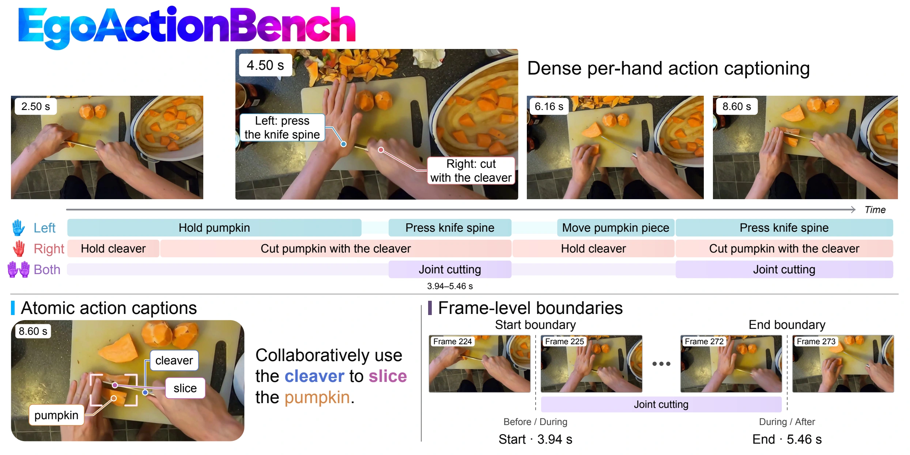

Atomic actions
Describe the specific operation, manipulated objects, tools, and motion—not just the activity.
Every action.
Every hand.
Every moment.
Benchmarking Dense Action Captioning for Egocentric Human Videos
1 S-Lab, Nanyang Technological University 2 Shanghai Jiao Tong University
What happens, when it happens,
and which hand performs it.
The video could not load. You can still explore its annotations using the timeline.
Click or drag a track to seek to any time. Use the action picker to jump to an action’s start, or 0.5× playback to inspect brief actions. On small screens, swipe the time ruler to scroll the timeline.
Understanding “cutting a pumpkin” is only the beginning. Models must recover the individual actions within continuous manipulation, locate them in time, and identify which hand performs them.
Describe the specific operation, manipulated objects, tools, and motion—not just the activity.
Recover the start and end of each action, including brief movements lasting less than a second.
Distinguish independent left- and right-hand actions from coordinated, two-handed manipulation.

We evaluate what happens, when it happens, and which hand performs it.
Retrieve candidate predictions that satisfy the temporal eligibility criteria for a reference action.
Select the prediction with the strongest content match for each reference action.
Measure temporal overlap, action coverage, and semantic fidelity.
The average of Temporal Overall and Semantic Overall. Higher is better.
EgoActionBench evaluates temporal localization and semantic fidelity through ten complementary metrics.
19 baseline models, two EgoAction models, and a human reference.
| Model | EgoAction Score | Temporal | Semantic | |||||||
|---|---|---|---|---|---|---|---|---|---|---|
| m-tIoU | F1 | Overall | Hand | Verb | Objects | Tools | Motion | Overall | ||
Temporal Overall averages m-tIoU and F1. Semantic Overall averages the applicable field scores within each action, then across reference actions.
Performance across five action-duration ranges, with sub-second actions highlighted.
| Model | <0.5 s | [0.5, 1) s | [1, 2) s | [2, 5) s | ≥5 s |
|---|
Each cell averages the selected per-action metric within its ground-truth duration range.
Publication and release links will appear here when available. Full source videos, dataset files, and model weights are not included in this preview.
Benchmark, evaluation protocol, and experiments.
Tools to run the benchmark and reproduce the evaluation.
Annotations, access instructions, and usage conditions.
Preliminary project citation.
Publication details will be updated on release.
@misc{shen2026egoactionbench,
title = {EgoActionBench: Benchmarking Dense Action
Captioning for Egocentric Human Videos},
author = {Shen, Yujiao and Song, Jiahe and Li, Haitian
and Yang, Jingkang and Liu, Ziwei},
year = {2026},
url = {https://egoaction-bench.github.io}
}